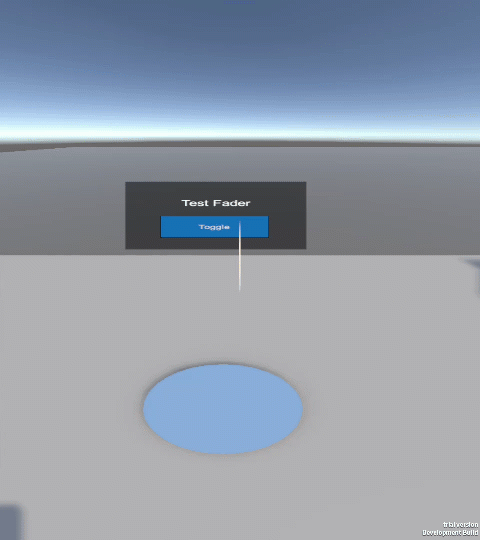

Fader
In VotanicXR2 SDK, fader is a full-view color overlay on your XR project. The typical uses are for scene load and transitions. The component is located under VXR SDK Manager > World Fader.

Using fader
Fader control API
The WorldFader class provides the following methods for controlling fader of the XR project.
WorldFader Public Methods
| Method | Description |
|---|---|
Fade |
Initiates a screen fade transition to a target color and opacity over a specified duration. |
Code example: Fade effect on start scene
The following example demonstrates how to implement a fade effect on the start of your XR project.
using System.Collections;
using UnityEngine;
using Votanic.VXR2.Core.Fader;
using Votanic.VXR2.Core;
public class SampleFadeOnStart : MonoBehaviour
{
IEnumerator Start()
{
yield return new WaitUntil(() => VXRObjectManager.Instance.Initialized);
WorldFader.Fade(Color.black, 1f, 0f); // start black
WorldFader.Fade(Color.black, 0f, 2f); // fade in
}
}